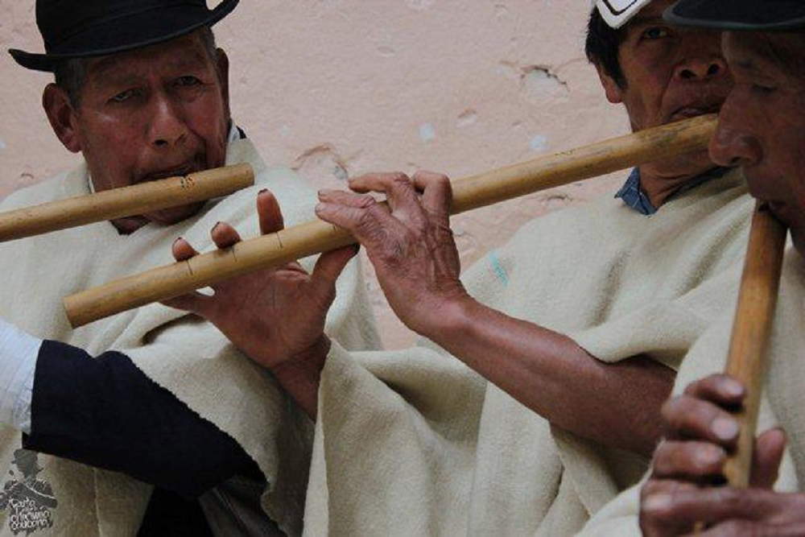

Chirimía in Cauca
Note 008
Home > Blog A Musician's Log > Note 008
A name that traveled
In Iberia, by the late medieval period, the chirimía was a clearly identifiable instrument: a loud, double-reed aerophone belonging to the shawm family. Conical bore, flared bell, high projection, used outdoors in civic and ceremonial settings. In modern terms, it sits comfortably within Hornbostel-Sachs 422.111.2.
When the word crossed the Atlantic with Spanish colonial expansion, it carried that meaning with it. What it did not carry was stability.
The instrument that did not survive
In the department of Cauca, southwestern Colombia, the word chirimía is still in use. The instrument it once referred to is not.
There, chirimía designates a transverse flute. It is side-blown, typically made from cane, though today often constructed from PVC or metal tubing. It has finger holes, no reed, and no structural relation to the Iberian shawm. Organologically, it belongs to the family of edge-blown flutes.
The ensemble built around it includes percussion: tambora, redoblante, guacharaca, maracas, sometimes bass drum. The flute leads; the percussion drives. The sound is mobile, designed for outdoor movement, for processions and festivities.
The term extends beyond the instrument. It names the ensemble, the repertoire, and often the event itself. What persists is not morphology. It is the word.
Colonial naming without precision
This shift is not an isolated anomaly. Early colonial sources show a consistent pattern: European terms applied to unfamiliar sound objects with limited concern for structural accuracy.
Words like flauta, trompeta, and chirimía appear in chronicles, administrative records, and ecclesiastical documents across Spanish America. In some cases, they clearly refer to imported instruments. In others, they describe Indigenous or Afro-descendant aerophones that do not match European organology.
Robert Stevenson documents the presence of chirimías in cathedral payrolls in Mexico and Peru, often performed by Indigenous musicians within liturgical ensembles. These may have been European shawms, locally built variants, or something in between. The documents rarely specify construction details.
The terminology functions as approximation. It names what the observer hears in relation to what the observer already knows.
In Cauca, the term chirimía anchors itself to a different sonic reality. Communities adopted the word and integrated it into their own musical lexicon. The original referent disappeared, but the label remained, now attached to a new instrument and a new ensemble structure.
The word ceased to describe a specific morphology and began to designate a practice.
Sound over etymology
Ethnomusicological work in Colombia, including that of Egberto Bermúdez and Carlos Miñana, situates Cauca chirimías within Afro-Colombian and Indigenous festive contexts. The ensembles are used in processions, patron saint festivals, and public celebrations.
The flute articulates short melodic phrases. The percussion creates dense rhythmic layers. The sound is continuous, insistent, designed to move with bodies through space.
Nothing in that configuration depends on a reed.
The name retains a trace of colonial encounter. But now, the sound belongs to a different system entirely.
Classification breaks
From an organological perspective, this creates friction.
Classification systems assume some alignment between name and structure. Chirimía breaks that assumption. The same term can refer to a double-reed conical oboe in Iberia or to a side-blown flute ensemble in Colombia.
To work with the term historically, one must constantly disambiguate. The archive does not guarantee clarity. It requires interpretation.
What is preserved in the name is not the instrument itself, but a layer of historical memory.
What persists
The Cauca chirimía shows that names do not necessarily track acoustic reality. They can detach, drift, and reattach to new forms without losing authority.
The reed disappears. The label remains.
And once it settles, it begins to define the sound it names.
Readings
- Baines, Anthony. Woodwind Instruments and Their History. 3.ed. London: Faber & Faber, 1967.
- Brown, Howard Mayer & Polk, Keith. Music in the Renaissance. 2.ed. Upper Saddle River, NJ: Prentice Hall, 2002.
- Claro Valdés, Samuel. Antología de la música colonial en América del Sur. Santiago de Chile: Ediciones Universidad Católica de Chile, 1974.
- Montagu, Jeremy. The World of Medieval & Renaissance Musical Instruments. Woodstock, NY: Overlook Press, 1976.
- Munrow, David. Instruments of the Middle Ages and Renaissance. London: Oxford University Press, 1976.
- Reese, Gustave. Music in the Renaissance. New York: W. W. Norton, 1954.
- Stevenson, Robert. Music in Mexico: A Historical Survey. New York: Thomas Y. Crowell, 1952.
- Wade, Peter. Music, Race, and Nation: Música Tropical in Colombia. Chicago: University of Chicago Press, 2000.
Video. From YouTube user Señal Colombia.
Additional information about these instruments can be found in the digital book Flautas traversas de los Andes.